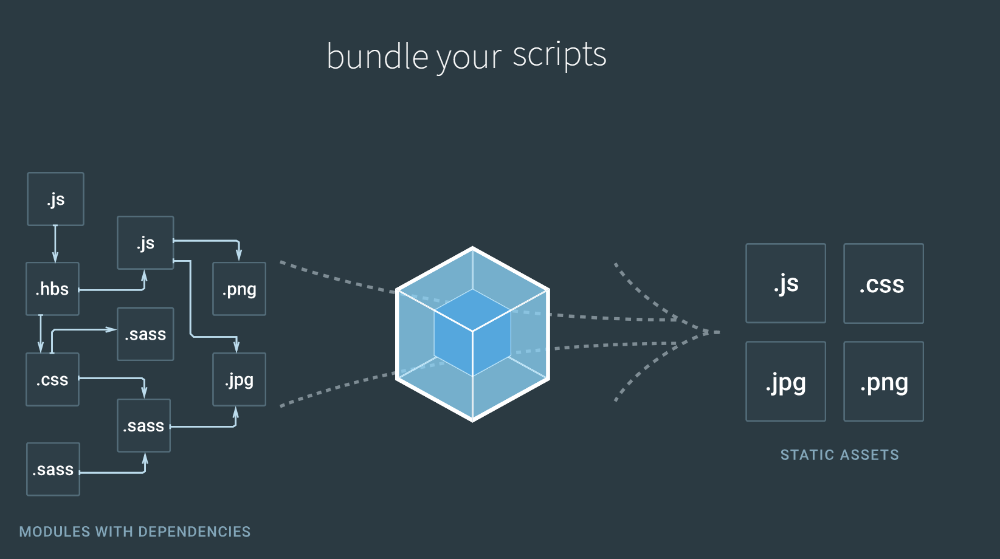

博主是14年入的程序员大军，当时主java兼具前端开发的活儿，在现在看来的一些流开发框架和新兴思想，早在node.js开始进入大家视野的时候就流行起来了，只是在那时博主并没有关注前端的生态圈（然而java好像也并没有关注，逃），所以还是处在很多人所描述的刀耕火种的阶段，前端代码全部挂载到全局作用域，包括插件导出的变量。那更别提组件化和模块化的编程思想了，甚至代码都不用压缩优化就直接上传到服务器发布了。
后来换了一家公司，没有前端开发这个职位，是从javaer转过去的，因为项目需要，渐渐的也就坐实了这个岗位。项目到现在（2014年8月-2017年7月22日）一共出现了三个阶段
- 用着十年前的开发（或者叫整合）技术的简陋期
- 经历4、5个月的半模块化改造的准现代期
- 到现在能整合全局资源（仅限web静态资源）,随意整合新技术的现代期（未实施）
为什么要不断的去折腾，去改造？仅仅是为了跟上“现代”的步伐吗？下面我将讲述每个阶段是如何无痛改造的，为什么要改造。
从简陋期到准现代期
举个例子，我们以前的代码是这样的
html页面部分
1 | <html> |
javascript部分
在common.js里，是我们的定义的通用函数，比如一些特定组件的部分代码如header或footer，或者是字符串处理，日期格式化的函数等等，这些函数都以对象或函数的形式暴露在全局作用域里，非常的冗杂和不安全，随着代码量的增加，容易导致覆盖，出现难以预料的bug，还有一个致命的弱点就是无法按需加载资源，我哪怕只是用到了其中一个小小的常量，都需要引用整个文件，然后从全局作用域里拿。
1 | // common.js |
1 | // individual.js |
因为项目是迭代开发的，功能一点点叠加上去，考虑到整个项目的生命周期，不至于到后期完全无法维护，所以我们必须以优雅的姿态去重构整个项目的资源引用方式，那就是模块化，一个模块做一件事情，并暴露它对外提供的接口以供具象化的页面来使用。比如header，footer，nav，sidebar，utils等等。前端的模块化有俩个标准，一个AMD(Asynchronous Module Definition)，一个是CMD(Common Module Definition)，前者是异步模块定义，推崇依赖前置，后者是通用模块定义，推崇依赖就近，AMD的代表框架有requirejs，CMD的代表框架有seajs，都是很优秀的作品，这里对二者有详细的介绍。最后我选择了requirejs作为本次重构的基础，其实就当是的代码来说，改造起来并没有什么难度，就是需要细心，细心，细心，只需要将common.js这个通用模块进行拆分就好了，页面只需要引入一个js文件，如下面这样
1 | <html> |
data-main是我们的代码主入口，src是requireJs的源码。从文件引用来说，至少我们不必再关心每次使用一个插件都要手动来加入一个script标签了，如何引用呢？我下面会介绍。
假如我们以前的代码是这样的
1 | // common.js |
上面的代码使用了两个全局对象，constants和utils，那么改造后应该是：
1 | // constants.js |
是不是感觉毫无挑战性，对，这就是一个体力活，细心点就好了
我们不必担心还需要手动去改动第三方插件，现在的主流插件基本都会
UMD方式去适配，也就是兼容了AMD，CMD，所以只需要直接引用第三方插件就行了，不必再去html文件里手动引用script标签了，其他具体实现细节和必备的配置可以参照requirejs官网的例子
等到改造完，也还没有愉快的结束，我们的准现代期增加了一个优化环节，官方提供了r.js这个优化器来帮我们打包压缩代码（毕竟生产环境过多的请求数还是不被允许的），此时的改造才真的做到了模块化，能优化，从简陋期无痛过渡到准现代期。此时的代码，其实已经具备了进入现代期的要求，那就是规范模块化。下面是我们即将进行的改造，顺利过渡到现代期，从而拥抱你想使用的新技术
从准现代期到现代期
其实这个阶段，因为对一些新工具新技术的不熟悉，绕了很多弯子，花费了不少的精力，好在弄出来了，基于webpack构建工具，解放键盘F5，加入代码风格和规范的检查工具，加入ECMAScript 6语法转换工具等等，为什么要使用这些，概括为主要以下几点：
- 提升开发效率和代码质量
- 新语法新和技术能解决开发上的很多痛点和盲点
- 强大的整合性和包容性（相对于封闭的
r.js优化器终于可定制了） - emmmmmm思考中
首先我们介绍一下webapck是什么

这是webpack官方文档首页对其的简单描述（ps: 其实中间的正方体是会旋转的哦），强大的webpack能整合所有依赖的文件进行处理，如less编译（依赖less-loader），ES6语法转换（依赖babel-loader），文件hash添加，自动上传ftp发布生产环境等等。还有就是webpack-dev-server这个开发神器，热替换、自动监测文件变化刷新浏览器，虽然现代期并没有用到实际项目中去，但是到现在（2017年7月22日）,我已经能完全拿出一套方案，使现有项目平滑过度到webpack。（ps：网上的教程大多是基于单页单入口的SPA应用，和后端完全解耦的，我们的项目是和后端处于半解耦状态，并且是多页多入口，所以并不能使用大多数的webpack配置文件，需要进行变通处理）
我们先来说说处理一般的SPA应用的配置参数
1 | module.exports = { |
抛开其他杂七杂八配置不谈，上面的配置就是大多数的SPA应用的配置。用在我们的项目里，在根目录运行webpack会发现发生错误，并提示缺少很多的模块，因为这些我们自定义的模块webpack本身并不能识别，所以这里有至关重要的一步，将现有的requirejs的配置文件里的paths同步迁移到webpack的配置文件里
1 | // 在requirejs配置文件里可能是这样写的 |
然后我们再打包，运行，发现丫的居然会报错了？最明显的错误就是define is not defined。让我们来翻翻上面我们准现代期的代码
1 | // individual |
这里的define就是报错的原因（webpack有时候并不能识别这里，有时候却又能正确转换成能运行的代码，没有深究这里的原因，虽然webpack2已经支持AMD风格的代码打包，但是我还是决定对这里稍作修改，变成CMD风格，即使是使用CMD风格的seajs依然是需要去掉外面那层包裹的函数的，不管怎样都得改）,于是我们只需要将上面的代码调整为：
2017年7月24日22点50分更新，经过我的尝试，只要配置依赖都正确，完全可以直接打包，不用非得改成CMD，于是换成webpack更轻松了~~😝
1 | var consts = require('constants'); |
至此我们再打包便可以轻轻松松合并了（当然如果你要提取公共代码的话又是另外一个插件了，这里不再赘述）
打包发布的问题解决了，最重要的一环开发环境的搭建呢？
其实机智的我早料到这种配置在我们的项目并不完美，因为HtmlWebpackPlugin这个插件需要的模板是放在硬盘里的静态文件模板，它会自动插入构建好的js和css文件，我们的模板不是静态的，是从php后端渲染的一段动态的html，还是作死试了试，果然出现了以下情况
- 动态引用的
header、footer不见了 - 页面出现一堆后端模板的语法
{$xxx}{$yyy}{$zzz}
其实webpack-dev-server提供了一个代理功能，那这里的问题解决起来就美滋滋了。单纯的我最先的配置是这样的：
1 | var express = require( 'express' ) |
以上代码将我们所有的请求路径一股脑全部代理给后端php服务了，HtmlWebpackPlugin这个插件会自动写入依赖的脚本文件和样式表文件，但是此时的文件是webpack-dev-server服务生成的，并且存在于内存里，所以此时我们再运行webpack开启的服务，就会造成页面出来了(包括任何动态从服务端渲染的数据)，但是样式和js都没有加载，因为请求被代理到了后端，后端的目录里并不存在这些文件（废话么），所以我们需要过滤掉这些特定的请求不让http-proxy-middleware插件进行代理，为了区分这些特定的请求，我们将entry字段里的文件名都加上一个前缀__webpack或任何独一无二的与后台请求开头不一样的字符串，此时proxyTable里的filter函数就派上用场了，查看官方文档是这么描述这个函数的
For full control you can provide a custom function to determine which requests should be proxied or not.
为了完全控制你的请求，你可以定义一个函数来确定这些请求是否应该被提交
于是我终于拿出一个满意的代理配置文件，开心得我仿佛升职加薪了一样😁
1 | var proxyTable = { |
让我来解释一下上面的代码：未匹配到以__webpack开头的请求，都进行代理，这里添加了一个assetsSubDirectory变量，这个变量其实是webpack生成的图片、字体文件、json文件、svg等仍然存在于内存里的引用的路径，因为在内存里随着我们的编码可能实时变动，所以它们还是不需要做代理，直接过滤掉。
对了，遗漏了一个很重要的配置，代码如下：
1 | plugins: [ |
机智的我们肯定能发现View-template这里的不同，见名知意，这个文件夹里的html都是对应的后端的模板视图文件，我们通过alwaysWriteToDisk这个参数（其实还需要配合另外一个插件）以template字段的值为目标，实时写入到filename对应的文件里，而此时，因为浏览器访问的页面里因为我们启动webpack-dev-server时已经编译了这个文件，js会主动和webpack服务建立一个eventSource长连接（这个连接也是排除在代理范围内的）来监听文件变化，所以就会自动刷新浏览器，从而实现我们的live-reload。
至此，从准现代期到现代期的过渡方案就算是完成了，接下面便是寻找一个合适的时间点实施到项目中去。若你要问我那么多页面是不是全都一个个得配，当然是，但是为了方便易维护，能不侵入现有项目去修改文件名，我们肯定需要去手动编写一个map映射文件，来指明我们的模板文件对应的入口文件，通过这个map我们再来动态生成entry和HtmlWebpackPlugin需要的模板路径，当然这里并不是没有便捷的办法，我们可以写一个脚本去读取View-template下面的目录来自动生成map但是因为我们童鞋在命名的时候文件夹和对应的入口文件并不能对应上，就得修改，这并不是推荐的做法，而且也不方便我们在改造代码风格的时候进行单个调试。
上面的示例代码都不是完整的，因为我并不是要提供一个webpack的教程，而是解决后端和前端html耦合的webpack-dev-server配置的问题。